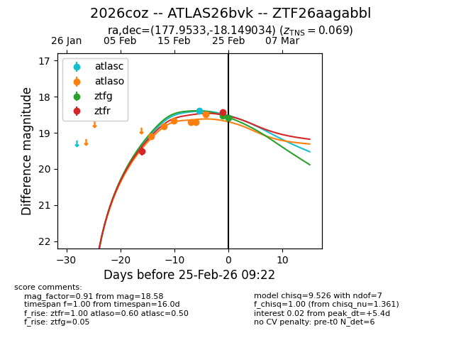
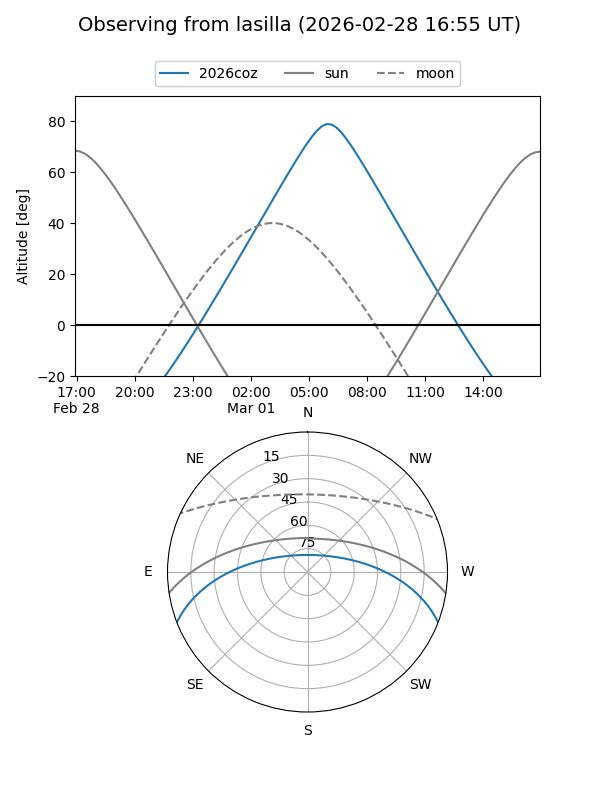
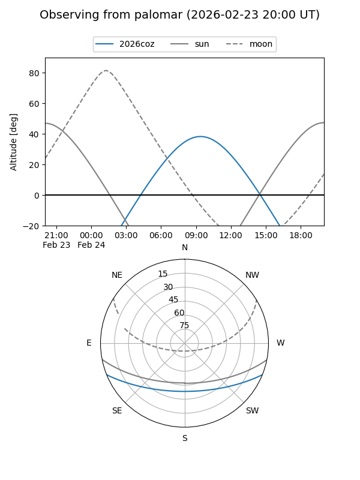
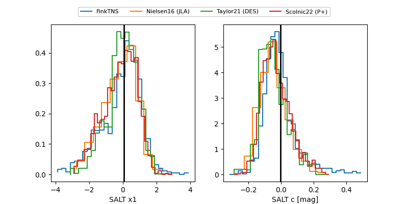

2026coz
Target 2026coz at 2026-02-25 09:24
Aliases and brokers:
FINK: link
Lasair: link
ALeRCE: link
TNS: link
YSE: link
alt names
ZTF26aagabbl (ztf,fink_ztf)
2026coz (tns,yse)
ATLAS26bvk (atlas)
Coordinates:
equatorial (ra, dec) = 177.9533,-18.14903
equatorial (HMS+DMS) = 11:51:48.80,-18:08:56.52
galactic (l, b) = (283.5788,+42.47100)
Flags:
confirmed ia
Photometry:
last atlasc=18.40, atlaso=18.48, ztfg=18.58, ztfr=18.44
1 atlasc, 6 atlaso, 2 ztfg, 2 ztfr detections
Lightcurve

Visibility


Additional plots
